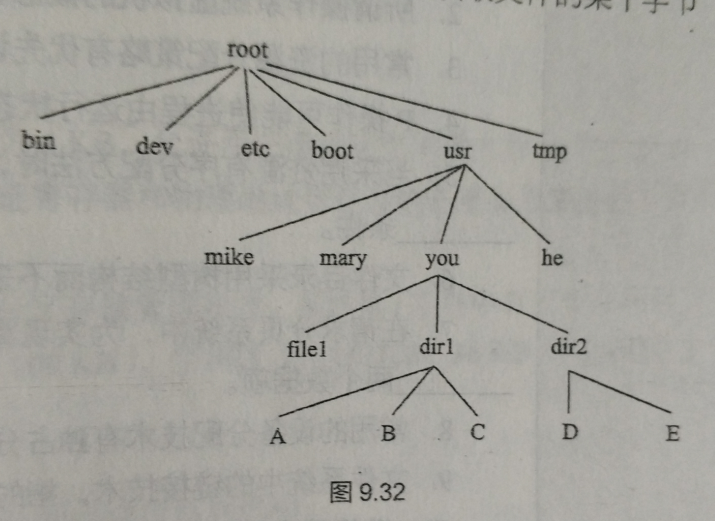
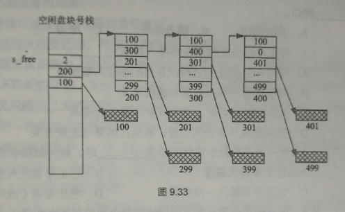

第 9 章 作业 · 文件系统
题目 1连续文件的结构
题目
设文件 A 按连续文件构造，并由四个逻辑记录组成（每个逻辑记录的大小与磁盘块大小相等，均为 512 B）。若第一个逻辑记录存放在第 100 号磁盘块上，试画出此连续文件的结构。
参考答案
答：连续文件的结构如下图：
文件 A 的四个逻辑记录 r0、r1、r2、r3 依次存放在第 100、101、102、103 号磁盘块上，文件占用一段连续的磁盘空间；文件目录中登记文件名 A、文件长度 4（个逻辑记录）和起始块号 100。
| 逻辑记录 | r0 | r1 | r2 | r3 |
|---|---|---|---|---|
| 磁盘块号 | 100 | 101 | 102 | 103 |
图 1 文件 A 的连续文件结构：逻辑记录 r0–r3 依次存放在 100–103 号磁盘块上，只要给出起始块号 100 和文件长度，就能算出任何一个逻辑记录所在的磁盘块（题源文档中该图是矢量图形对象，无法导出；上表按题干数据重绘）。
题目 2串联文件的结构与访问次数
题目
设文件 B 按串联文件构造，并由四个逻辑记录组成（其大小与磁盘块大小相等，均为 512 B）。这四个逻辑记录分别存放在第 100、157、66、67 号磁盘块上，回答如下问题。
- 画出此串联文件的结构。
- 若要读文件 B 第 1560 字节处的信息，问要访问哪一个磁盘块？为什么？
- 读文件 B 第 1560 字节处的信息需要进行多少次 I/O 操作？为什么？
（题源原题第（1）问写作「画出此串联文件文件的结构，」，重复的「文件」二字是笔误，页面上已改正。）
参考答案
（1）串联文件的结构
答：此串联文件结构如下图所示。文件目录中登记文件名 B 和起始块号 100；每个磁盘块中除存放逻辑记录外还设有链接字，登记下一个逻辑记录所在磁盘块的块号，最后一个磁盘块的链接字是结束标志。
| 磁盘块号 | 逻辑记录 | 链接字（下一块） |
|---|---|---|
| 100 | r0 | 157 |
| 157 | r1 | 66 |
| 66 | r2 | 67 |
| 67 | r3 | ∧（结束） |
图 2 文件 B 的串联文件结构：文件目录指向首块 100，各块的链接字把 100 → 157 → 66 → 67 号磁盘块依次串成一条链，逻辑记录并不按块号顺序存放，要读某个逻辑记录只能从首块起沿链逐块追踪（按题干数据重绘）。
（2）第 1560 字节处的信息所在的磁盘块
答：1560/512 = 3 余 24，因此文件第 1560 逻辑字节在 r3 逻辑块上，该逻辑块被分配在 67 号磁盘块上。
（3）需要的 I/O 操作次数
答：要访问 67 号磁盘块，需要先找到文件目录，然后依次访问 100、157 和 66 号磁盘块，最后读取 67 号磁盘块。因此若文件已打开（文件目录信息已在内存中）需要 4 次 I/O 操作，文件未打开需要 5 次 I/O 操作。
题目 3重名问题与二级文件目录
题目
什么是「重名」问题？二级文件目录结构如何解决这一问题？
参考答案
答：重名是指不同用户对不同文件起了相同的名字。在二级文件目录结构中，每个用户建立用户文件目录，系统建立主目录，登记所有用户目录的信息，用目录名加文件名唯一标识每个文件解决重名问题。
题目 4共享文件系统的文件组织方案
题目
假设两个用户共享一个文件系统，用户甲要用到文件 a、b、c、e，用户乙要用到文件 a、d、e、f。已知：用户甲的文件 a 与用户乙的文件 a 实际上不是同一文件；用户甲的文件 c 与用户乙的文件 f 实际上是同一文件；甲、乙两用户的文件 e 是同一文件。试拟定一个文件组织方案，使得甲、乙两用户能共享该文件系统而不致造成混乱。
参考答案
答：如下图所示。用户甲的主目录名为 jia，有四个文件，文件名为 a、b、c、e。
用户乙的主目录名为 yi，有四个文件，文件名为 a、d、e、f。
整理成下表：两个主目录下的 a 是各自不同的文件；甲的 c 与乙的 f 实际上是同一个文件；甲、乙两边的 e 也是同一个文件。
| 主目录 jia（用户甲） | 主目录 yi（用户乙） |
|---|---|
| a（甲自己的文件 a） | a（乙自己的文件 a，与甲的 a 不是同一文件） |
| b | d |
| c（与乙的 f 是同一文件） | f（与甲的 c 是同一文件） |
| e（与乙的 e 是同一文件） | e（与甲的 e 是同一文件） |
图 3 甲、乙两用户共享文件系统的文件组织方案：jia、yi 两个主目录下各登记四个文件名，甲的 c 与乙的 f 指向同一个文件，两边的 e 是同一个文件（按答案文字整理）。
（题源文档中本题的目录示意图是 Word 绘图对象，导出稿里只留下「SHAPE \* MERGEFORMAT」占位标记，图形本身无法导出；上表按答案文字整理。）
题目 5UNIX 7 版本的索引结构
题目
设某文件 A 有 10 个逻辑块，另一文件 B 有 500 个逻辑块，试分别用 UNIX 7 版本的索引结构画出这两个文件的索引结构图。
参考答案
（1）文件 A 的索引结构
答：文件 A 有 10 个逻辑块：按 UNIX 7 版本的索引结构则要构造大型文件结构。这时数组 i_addr[ ] 用作一级间接索引。
文件 A 的文件索引结构如下图所示（磁盘块号随意设置）。
| i 节点中的表项 | 指向的索引块 | 索引块中的表项 → 数据块 |
|---|---|---|
| i_addr[0] | 180 号磁盘块（一级间接索引表） | 表项给出数据块的块号（题源图中为首项 98、末项 60），依次对应逻辑块 r0–r9，10 个逻辑块的块号全部登记在这一个索引块中 |
| i_addr[1]–i_addr[7] | 未使用 | 文件只有 10 个逻辑块，一个索引块（可容纳 256 项）已足够，不必再构造间接索引 |
图 4 文件 A 的大型文件结构（题源原图注：文件A 的大型文件结构）：i 节点中的 i_addr[ ] 用作一级间接索引，i_addr[0] 指向 180 号索引块，索引块中的每个表项再登记一个数据块的块号（如 98 → r0、…、60 → r9）；题源文档中该图是矢量图形对象，上表按题源答案重绘。
（2）文件 B 的索引结构
文件 B 有 500 个逻辑块：按 UNIX 7 版本的索引结构则要构造大型文件结构。这时数组 i_addr[ ] 用作一级间接索引。
500/256 = 1，余 244
文件 B 的文件索引结构如下图所示（磁盘块号随意设置）。
| i 节点中的表项 | 指向的索引块 | 索引块中的表项 → 数据块 |
|---|---|---|
| i_addr[0] | 180 号磁盘块（一级间接索引表） | 表项给出数据块的块号（题源图中为首项 98、末项 60），依次对应逻辑块 r0–r255，256 项正好把这个索引块填满 |
| i_addr[1] | 398 号磁盘块（一级间接索引表） | 表项给出数据块的块号（题源图中为 560、70 等），依次对应余下的 244 个逻辑块 r256–r499 |
| i_addr[2]–i_addr[7] | 未使用 | 500 = 256 + 244，两个索引块即可容纳，不必再构造间接索引 |
图 5 文件 B 的大型文件结构（题源原图注：文件B 的大型文件结构）：500 个逻辑块要占用两个一级间接索引块——i_addr[0] 指向的索引块登记 r0–r255，i_addr[1] 指向的索引块登记余下的 r256–r499（500/256 = 1，余 244）；题源文档中该图是矢量图形对象，上表按题源答案重绘。
（题源原图中第二个索引表的末项标作「r243」，与答案 500/256 = 1 余 244 的算式不符；244 个逻辑块应为 r256–r499，页面上按答案的算式写出 r499。）
题目 6树型目录下读文件 A 的存取次数
题目
某文件系统中，辅存为硬盘，物理块大小为 512 B。有文件 A，包含 590 个逻辑记录，每个记录占 255 B，每个物理块存放 2 个逻辑记录。文件 A 所在的目录如图 9.32 所示，此树型目录结构由根目录节点、作为目录文件的中间节点和作为信息文件的叶节点组成。每个目录项占 127 B，每个物理块放 4 个目录项，根目录的第一块常驻主存。回答如下问题：
- 若文件采用串连结构，链接字占 2 B，那么，要将 A 读入主存，至少要存取几次硬盘？为什么？
- 若文件采用连续结构，那么，要将 A 的第 480 号记录读入主存，至少要存取几次硬盘？为什么？

参考答案
（1）采用串连结构时读文件 A 的存取次数
答：第一次读根目录的第二块，获得 usr 的地址；第二次读 usr 目录的第一块，获得 you 的地址；第三次读 you 目录的第一块，获得 dir1 的地址；第四次读 dir1 目录的第一块，获得 A 的地址；第五次开始遍历串联的 A 的逻辑记录，590 个逻辑记录占用 295 个磁盘块，需要存取 295 次。
590 ÷ 2 = 295（个磁盘块）
4 + 295 = 299（次）
（2）采用连续结构时读第 480 号记录的存取次数
答：连续结构可随机访问，第四次获得 A 的地址后就可计算得到 A 的第 480 号记录的地址，然后直接第五次访问该记录。
480 ÷ 2 = 240（每个物理块存放 2 个逻辑记录）
题目 7成组链接法的盘块分配与回收
题目
某系统采用成组链接法来管理系统盘的空闲存储空间，目前，磁盘的状态如图 9.33 所示。回答如下问题：
- 该磁盘中目前还有多少个空闲盘块？
- 系统需要给文件 F 分配 3 个磁盘块，试给出将被分配出去的磁盘块号。
- 接着（在创建文件 F 之后），系统要删除另一个文件，并回收它所占的 5 个盘块，它们的盘块号依次为 700、711、703、788、701，试给出回收后的盘块链接情况。

参考答案
（1）空闲盘块数
301 个空闲盘块。
（2）给文件 F 分配的磁盘块号
100，200，299。
（3）回收 5 个盘块后的链接情况
s_free=4, s_free[0]=711, s_free[1]=703 s_free[2]=788 s_free[3]=701, 原 299 所在位置存放盘块号 700。